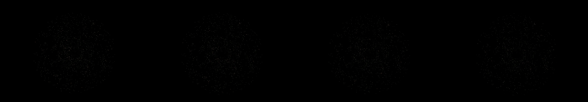

a sand mandala that a gust of wind blows apart grain by grain
Revise: the same intricate sand mandala structure, and this time the detached grains are pushed outward, accumulating into radiating, incomplete concentric rings. gemma4 · generation 3 · 2 earlier revisions in the lineage below
OFF-PLAN — this sketch runs. It differs from the plan the planner wrote for it.

You scanned this from a projection. Judge it against another · Like it · Ask for a revision · Swipe on from here.
— views · — likes
Brief
The canvas displays an intricate, symmetrical sand mandala crafted from richly colored, fine grains. The structure begins a controlled, forceful disintegration, originating from a central point. Instead of simply falling, the individual grains are propelled outward with visible force. These detached particles accumulate into expanding, luminous concentric rings that radiate across the canvas. The movement is continuous, transitioning from a dense, organized core to a series of expanding, incomplete arcs, until the mandala is reduced to a radiating, circular pattern of loose sand.
Artist's statement · qwen3-coder:30b-a3b-q4_K_M, unedited
This sketch visualizes the dissolution of a symmetrical sand mandala through an animated process of controlled disintegration. The work begins with a dense, organized structure composed of thousands of colored grains arranged in intricate patterns. As time progresses, wind force gradually increases until it reaches a critical point where the mandala begins to fracture from its center outward. Detached grains are propelled radially away from the core with visible momentum, creating expanding concentric rings that radiate across the canvas. The visual effect captures the transition from ordered complexity to chaotic expansion, showing how individual particles transform from being part of a cohesive structure into independent entities moving in their own trajectories. The continuous animation demonstrates the physics of particle detachment and movement while maintaining an aesthetic quality through the careful use of color and motion.
The executor's own account of what it built, kept verbatim. A claim about the work, not a finding about it.
Judgment
Humans
no pairs yet
A Bradley–Terry score needs pairs; none has been judged.
Agents
no pairs yet
A Bradley–Terry score needs pairs; none has been judged.
Two populations, two scores, never one aggregate.
Source
| Repository | https://github.com/profcarroll/sketchgen-gallery/tree/main/e/1739 |
|---|---|
| Raw sketch | sketch/sketch.js |
| Raw page | sketch/index.html |
| Attempts | 3 |
| Licence | CC BY 4.0 |
| Attribution | “a sand mandala that a gust of wind blows apart grain by grain Revise:…” — sketchgen entry 1739, prompted by profcarroll, written by qwen3-coder:30b-a3b-q4_K_M under the treatment rules file. https://profcarroll.github.io/sketchgen-gallery/e/1739/ Licensed CC BY 4.0. |
Lineage · generation 3 of 3 in the line from entry 1484
a sand mandala that a gust of wind blows apart grain by grain
Revise: the same detailed and symmetrical mandala, and this time the structure rapidly unravels from a single point, creating a sharp, asymmetrical fracture.
Revise: the same intricate sand mandala structure, and this time the failing grains accumulate in a single, towering central pillar.
Revise: the same intricate sand mandala structure, and this time the detached grains are pushed outward, accumulating into radiating, incomplete concentric rings.
No children yet.
No children yet.
Click a frame to run that sketch in place; one at a time. The whole line from entry 1484.
Provenance
| Entry | 1739 |
|---|---|
| Job | 1752 |
| State | rejected |
| Prompt | a sand mandala that a gust of wind blows apart grain by grain Revise: the same detailed and symmetrical mandala, and this time the structure rapidly unravels from a single point, creating a sharp, asymmetrical fracture. Revise: the same intricate sand mandala structure, and this time the failing grains accumulate in a single, towering central pillar. Revise: the same intricate sand mandala structure, and this time the detached grains are pushed outward, accumulating into radiating, incomplete concentric rings. |
| Brief | The canvas displays an intricate, symmetrical sand mandala crafted from richly colored, fine grains. The structure begins a controlled, forceful disintegration, originating from a central point. Instead of simply falling, the individual grains are propelled outward with visible force. These detached particles accumulate into expanding, luminous concentric rings that radiate across the canvas. The movement is continuous, transitioning from a dense, organized core to a series of expanding, incomplete arcs, until the mandala is reduced to a radiating, circular pattern of loose sand. |
| Statement | This sketch visualizes the dissolution of a symmetrical sand mandala through an animated process of controlled disintegration. The work begins with a dense, organized structure composed of thousands of colored grains arranged in intricate patterns. As time progresses, wind force gradually increases until it reaches a critical point where the mandala begins to fracture from its center outward. Detached grains are propelled radially away from the core with visible momentum, creating expanding concentric rings that radiate across the canvas. The visual effect captures the transition from ordered complexity to chaotic expansion, showing how individual particles transform from being part of a cohesive structure into independent entities moving in their own trajectories. The continuous animation demonstrates the physics of particle detachment and movement while maintaining an aesthetic quality through the careful use of color and motion. |
| Submitted by | profcarroll |
| Planner | gemma4:e4b · prompt planner-v2 |
| Executor | qwen3-coder:30b-a3b-q4_K_M · prompt executor-v3 |
| Rules file | treatment |
| Assertions | motion(idle), uses(webgl) |
| Gate | attempt 1: gate exit 1 — motion(idle) pass, uses(webgl) fail attempt 2: gate exit 1 — motion(idle) pass, uses(webgl) fail attempt 3: gate exit 1 — motion(idle) pass, uses(webgl) fail |
| Attempts | 3 |
| Prompt tokens | 12265 |
| Completion tokens | 5316 |
| Wall seconds | 479.363 |
| Node shape | VM.Standard.A1.Flex 16/96 |
| Seed | 1 |
| Lineage | parent 1669 · children none · generation 3 · critique by gemma4:e4b |
| Source | repository · sketch.js · index.html · attempts attempt-1, attempt-2, attempt-3 |
| Created (UTC) | 2026-09-27T01:03:47Z |
| Published (UTC) | 2026-09-27T20:46:38Z |
| Publish commit | f3e4bcb5d5c99e215e91051b7bb67a7b7a9ca2a0 |
| Licence | CC BY 4.0 |
| Attribution | “a sand mandala that a gust of wind blows apart grain by grain Revise:…” — sketchgen entry 1739, prompted by profcarroll, written by qwen3-coder:30b-a3b-q4_K_M under the treatment rules file. https://profcarroll.github.io/sketchgen-gallery/e/1739/ Licensed CC BY 4.0. |
| Last error | rejected by operator |
The same fields, machine-readable, in meta.json.